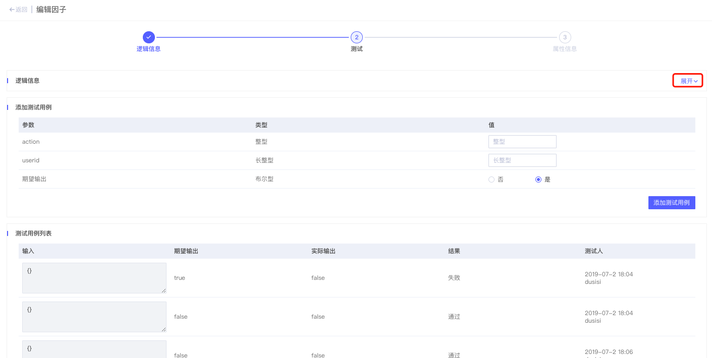
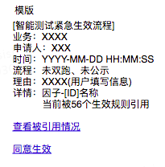
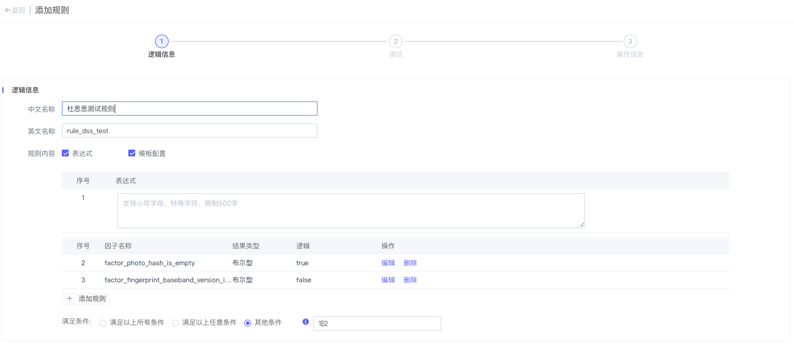
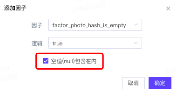

说明：创建/修改规则（废弃）
一、背景
升级规则、因子创建、编辑流程：
1、解决标签、共享业务方等属性信息修改，因强制更新导致无法快速修改问题；
2、解决内容-表达式、结果类型修改，涉及的强制更新导致修改操作复杂问题；
3、解决规则、因子配置过程中的提示信息错误、缺失问题；
4、解决因子无标签，导致无法快速搜索问题；
二、名词解释
属性信息：标签、共享业务方
逻辑信息：表达式、状态、英文名称
强制更新：若本次操作影响线上表达式的执行结果，需先将线上状态取消后再进行操作或者强行变更信息；
智能测试：规则、因子修改时按系统安全执行的双跑测试流程管理，即：当修改规则、因子、因子工具时，若影响线上策略的执行，将会进入智能测试流程，进行修改生效前的双跑。双跑期间，线上仍按照修改前的规则、因子逻辑执行；修改的逻辑为标记状态执行。
公示：规则、因子修改生效前的系统信息公示，为修改生效前的信息同步机制，默认30分钟，系统自动执行；
三、配置指南
3.1 因子配置指南
3.1.1 创建
Step1: 进入因子列表页面，点击“添加因子”，进入创建因子页面
Step2 : 按照页面提示依次填写因子的“逻辑信息”-->“测试用例”-->“属性信息”

注意：
- 英文名称：驼峰命名
- 选择工具：普通因子/累计因子/决策表因子/名单库因子，同原在因子列表页面中配置扩展因子相同
- 因子内容：原表达式书写
-
点击保持草稿：草稿信息不保持在列表中，当再次点击"添加因子"时，提示有草稿信息
点击保持草稿：草稿信息不保持在列表中，当再次点击"添加因子"时，提示有草稿信息,可使用或者废弃
3.1.2 修改
修改逻辑信息
Step1:在因子列表中找到需要修改的因子，并点击因子进入编辑页面
注意：
此时若有其他人正在编辑该因子，您将收到提示xxmis号正在修改，需xx修改完成/退出编辑状态后，您方可修改。若您急于修改请大象联系该用户退出编辑状态。

Step2:进入编辑页面后，修改因子仍需要经过测试，并且至少有一条新增的成功的测试用例方可提交修改，之后启动智能测试任务。
Step3:智能测试流程：设定标记时间（人工设定）-->双跑标记（系统执行）-->双跑完成（系统执行）-->验证数据是否正常（系统提供数据人工验证）-->数据正常，公示上线（人工确认）-->公示30分钟，自动上线生效（系统执行）-->智能测试完成
注意
- 修改因子，在智能测试中会依据引用因子的规则在其场景配置同期命中量作为对比数据；
- 为什么要有公示----因子存在多业务方共用的情况，当一个业务方修改时会影响其他业务方，因子公示会将因子确认修改的信息和双跑结果以大象消息通知给其他业务方，若通知后30分钟内其他业务方无异议则成功；若有异议则需业务方大象同修改人沟通，终止修改；
- 双跑标记最长时间为30分钟，想要延长双跑标记时间可以么？本期不支持，若有需求后续二期增加。
- 修改需要紧急上线怎么办？--可选择紧急上线申请，可跳过双跑标记、公示期。
-
紧急上线：用户在编辑页面中逻辑修改并确认提交后，进行紧急上线申请，填写理由-->系统将相关申请信息通过大象公众号推送给引用方的业务负责人-->负责人审批通过-->修改执行完成

修改属性信息
Step1:在因子列表中找到需要修改的因子，并点击因子进入编辑页面
Step2:进入编辑页面后，在引导页第三部分“属性信息”中，修改共享信息、标签信息等，修改后点击“提交”，完成修改；
3.2 规则配置指南
3.2.1 创建
Step1: 进入规则列表页面，点击“添加规则”，进入创建规则页面
Step2 : 按照页面提示依次填写规则的“逻辑信息”-->“测试用例”-->“属性信息”

注意
- 英文名称：驼峰命名，且仅支持小写字母
- 规则内容配置：支持表达式和模版混合使用的方式；也可以单独使用表达式、模版配置；
-
模版配置：升级原有模版配置，支持区间数据配置、空值nil配置，含义说明如下：

说明
空值（null）包含在内
- 不包含
判断不等于nil时，执行上述逻辑，满足条件命中；不满足条件，未命中；等于nil时，未命中；
- 包含
不需要考虑nil值情况，空值也参与逻辑判断
- 满足条件：支持，满足以上所有条件--同所有&&条件；满足以上任意条件--同所有||条件；其他条件--支持用户按序号自定义组合逻辑；
- 点击保持草稿：草稿信息不保持在列表中，当再次点击"添加规则"时，提示有草稿信息可使用或者废弃
3.1.2 修改
修改逻辑信息
Step1:进入规则列表页面，需要修改的规则，并点击规则进入编辑页面
注意：
此时若有其他人正在编辑该因子，您将收到提示xxmis号正在修改，需xx修改完成/退出编辑状态后，您方可修改。若您着急修改请大象联系该用户退出编辑状态。

Step2:进入编辑页面后，修改规则仍需要经过测试，并且至少有一条新增的成功的测试用例后方可提交修改，之后启动智能任务。
Step3:智能测试流程：设定标记时间（人工设定）-->双跑标记（系统执行）-->双跑完成（系统执行）-->验证数据是否正常（系统提供数据人工验证）-->数据正常，公示上线（人工确认）-->公示30分钟，自动上线生效（系统执行）-->智能测试完成
注意
- 修改规则，在智能测试中会使用规则在其场景配置同期命中量作为对比数据；
- 为什么要有公示--规则存在多业务方共用的情况，当一个业务方修改时会影响其他业务方，公示会将规则确认修改的信息和双跑结果以大象消息通知给其他业务方，若通知后30分钟内其他业务方无异议则成功；若有异议则需大象同修改人沟通，终止修改生效；
- 双跑标记最长时间为30分钟，想要延长双跑标记时间可以么？本期不支持，若有需求后续二期增加。
- 修改需要紧急上线怎么办？--可选择紧急上线申请，可跳过双跑标记、公示期。
-
紧急上线：用户提交紧急上线申请，填写理由-->系统将相关申请信息通过大象公众号推送给 Zeus业务负责人-->负责人审批通过-->修改执行完成
修改属性信息
Step1:在规则列表中找到需要修改的规则，并点击规则进入编辑页面
Step2:进入编辑页面后，在引导页第三部分“属性信息”中，修改共享信息、标签信息等，修改后点击“提交”，完成修改；
3.3 特殊说明
累计因子修改说明
累计因子创建流程无变化
累计因子逻辑信息双跑说明：
（1）修改读取条件：累计因子的数据无变化
（2）修改 累计事件、累计周期、累计类型、按何累计、累计值、满足何种条件累计 的配置条件时

例如：近5天同ip注册用户数
假设每天同ip注册用户数分布如下，Day6 对“满足何种条件累计”进行了修改，此时累计数据的写入条件发生变化，第六天的数据由2个变为6个。
当前版本实现的累计因子双跑，近5天同ip注册用户数，【线上生效】=3+4+2+5+2=16个；【双跑】=3+4+2+5+6=20个，【智能测试修改完成后】=3+4+2+5+6=20个
|
Day1 |
Day2 |
Day3 |
Day4 |
Day5 |
Day6 |
|
|---|---|---|---|---|---|---|
|
同ip注册用户数 |
2个 |
3个 |
4个 |
2个 |
5个 |
2个-->6个 |
为什么这样做？
当前累计因子不支持回溯，因此若按照新逻辑重新执行，会导致数据断层，【双跑】=6，涉及累计类的规则命中量均会异常
同时后续累计因子支持回溯，该技术方案可无缝衔接；